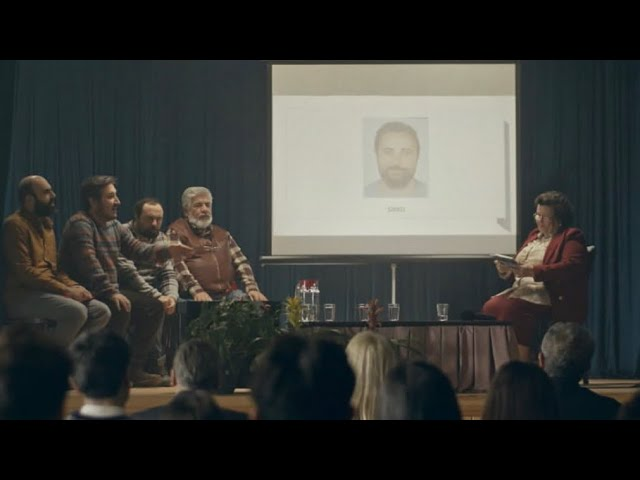

Sayın UTKU; Saha Araştırmacısı, Fütürist ve Düşün Emekçisi konuşmacılarımızın katıldığı özel söyleşi oturumunda kürsü ve projeksiyon kontrolü size devredilmiştir.
Yılmaz, İlkkan ve Ersoy kendilerine "Saha Araştırmacısı, Fütürist, Düşün Emekçisi, Duayen" gibi unvanlar yazdırdı. Birini seçip mikrofonu ver!
Mumlara dokun ya da aşağıdaki kürsü butonuyla tek seferde üfle!